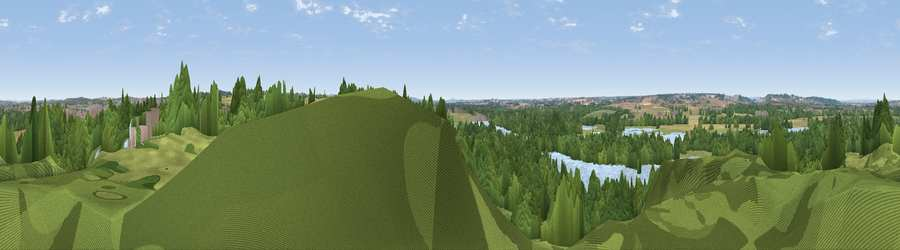

Viewpoint near Drayton Basset
#35358 in England · top 65% of its area beats it · near Drayton BassetWhere it is
The exact computed spot (SP 21025 99675). Click the marker for map links.
The view, rendered

A 360° render of this exact spot computed from the terrain model, tree cover and land cover — summer colours, afternoon light, calibrated against photographs of famous viewpoints. Real trees, hedges and buildings will differ in detail.
The panorama
Grey silhouette: terrain skyline in each direction (720 bearings, Earth curvature and refraction included). Dashed green: skyline with trees (+15 m) and buildings (+8 m) as obstacles. Blue strip: how far the ground is visible on each bearing.
Where the view opens
Wedge length = distance to the farthest visible ground on that bearing (vegetation-aware). Rings at 10, 25 and 50 km.
What fills the view
50% woodland · 18% grassland · 14% water · 11% cropland · 7% built-up
Angular shares of the visible panorama (visual magnitude), not map area. Landscape diversity 0.60 (0–1 Shannon).
Key numbers
More beautiful places nearby
The staircase of upgrades: each row has a higher view potential than everything closer. Driving times are estimates from straight-line distance, calibrated against real road routing — check an actual route before setting out.
| Place | Direction | Drive | Score |
|---|---|---|---|
| Viewpoint near Wood End | ESE · 3 km | ~7 min | 39.6 |
| Viewpoint near Dordon | E · 4 km | ~9 min | 57.0 |
| Viewpoint near Hopwas | NW · 6 km | ~13 min | 57.8 |
| Viewpoint near Ansley Common | ESE · 11 km | ~20 min | 69.0 |
| Viewpoint near Streetly | W · 15 km | ~27 min | 69.5 |
| Viewpoint near Stanton under Bardon | ENE · 28 km | ~45 min | 76.0 |
| Viewpoint near Woodhouse Eaves | ENE · 33 km | ~51 min | 77.7 |
| Viewpoint near Abberley | SW · 56 km | ~78 min | 78.1 |
52.59447, -1.69105 · source: screening · position refined by local search. Computed location — check access rights before visiting.